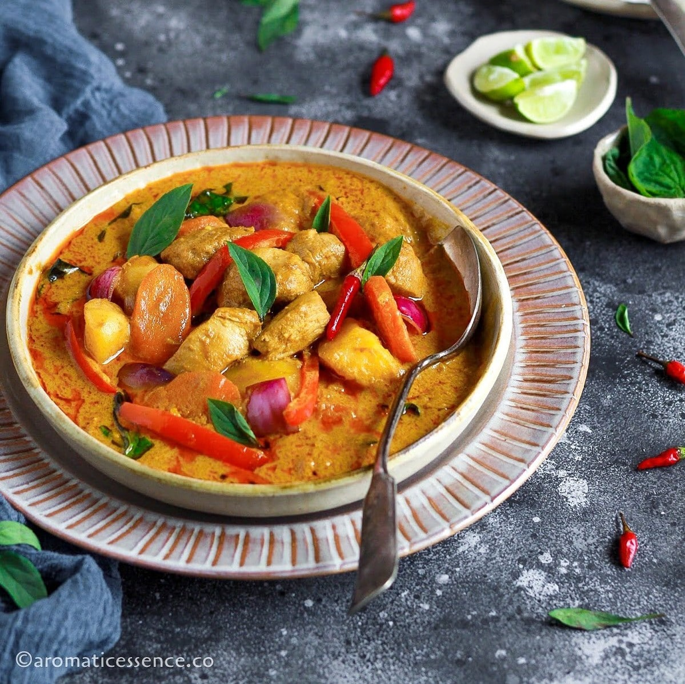

Thai Yellow Curry Recipe

Thai yellow curry is a warm, mildly spiced curry made with coconut milk, tender chicken, and sweet vegetables.
Yellow curry gets its golden color from turmeric and curry powder, and it tastes rich, savory, and slightly sweet.
Ingredients:
- 1 lb boneless, skinless chicken thighs, cut into bite-size pieces
- 1 tbsp neutral oil
- 2 tbsp Thai yellow curry paste
- 1 can (13.5 oz) coconut milk
- 1 cup chicken broth
- 1 tbsp fish sauce
- 1 tbsp brown sugar
- 1 medium potato, peeled and diced
- 1 cup carrots, sliced
- 1/2 cup onion, sliced
- 1 red bell pepper, sliced
- 1 tbsp lime juice
- Fresh cilantro, for garnish
Instructions:
- Heat oil in a pot over medium heat. Add curry paste and stir for 30 seconds until fragrant.
- Pour in coconut milk and chicken broth, whisking to dissolve the paste.
- Add chicken, potato, and carrots. Simmer for 12-15 minutes until chicken is cooked and vegetables are tender.
- Stir in fish sauce, brown sugar, onion, and bell pepper. Simmer for 5 minutes.
- Finish with lime juice. Taste and adjust seasoning if needed.
- Serve hot over steamed rice and garnish with cilantro.
Home